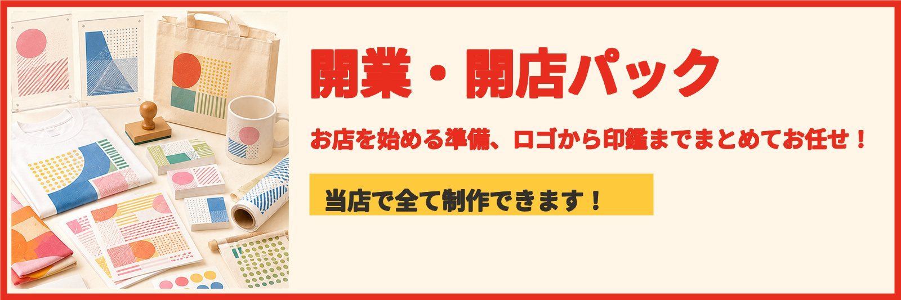

印鑑の全国通販はBASEカートから。正午までのご注文で当日発送します（土日祝を除く）。
BASEで注文Tシャツプリント・ユニフォームは、同じ店主の「BUN PRINT（ぶんプリ）」で承っています。
正午までのご注文で当日発送/ 店頭なら認印 最短15分/ 実印・銀行印も店頭約1時間
はんこ屋ぶんちゃんとは
11年
郡山駅前で、
作り続けています。
印鑑を主役に、ゴム印・名刺・ステッカー・チラシ・ポスター・グッズまで。お店やお仕事に必要なものを、まとめてお作りしています。
いちばんの強みは、速さです。認印は店頭で最短15分、実印・銀行印も約1時間で当日お渡し。車の購入・不動産の契約・相続など、急に印鑑が必要になった場面に間に合わせます。
1点からお受けします。「こんなの作れる？」から、どうぞお気軽に。
〒963-8001 福島県郡山市大町1-3-17 ／ TEL 024-925-6861
店主より
助けられて開いた店だから、
開く人を助ける店に。
勤めていた会社が倒産して、仲間に助けられてこの店を開きました。開店の日、たくさんの花が届いたのが、いままでで一番うれしかったことです。
だから今度は、こちらが手伝う番だと思っています。お客さんの晴れ舞台に、はんこから携われる——それがこの仕事の一番おもしろいところです。
ロゴ・印鑑・名刺。開業のときに必要なものは、だいたい揃えられます。まずは何でも聞いてください。
店の外では、YouTube「はんこ屋ぶんちゃんねる」で郡山のお店を訪ね歩いています。動画は173本。おかげで、この街のことはだいたい分かるようになりました。
はんこ屋ぶんちゃん 店主 國分 雄太
ご利用の流れ
お問い合わせから、
受け取りまで。
「何を頼めばいいか分からない」から始めて大丈夫です。1点からお受けします。お見積りは無料、お支払いはお受け取りのときで結構です。
-
1
お問い合わせ
店頭でも、LINEでも。作りたいものと使う場面をお聞かせください。写真を送っていただくだけでも大丈夫です。
-
2
お見積り・ご確認
金額と納期をお伝えします。デザインが必要なものは、仕上がりを見ていただいてから進めます。
-
3
制作
お名前や用途に合わせて、一点ずつお作りします。印鑑は書体をお選びいただきます。認印は最短15分、実印・銀行印は約1時間です。
-
4
お受け取り・お支払い
できあがったらご連絡します。店頭でのお受け取りも、ご郵送も承ります。お支払いはお受け取りのときで大丈夫です。現金・カードがお使いいただけます。
取扱品目
主役は、はんこ。
ほかにも作れます。
印鑑は郡山市の当店で即日作成できます。郡山駅前で11年のはんこ屋ぶんちゃんが、開業・婚姻・車の購入で急に印鑑が必要になった方へ、認印は最短15分、実印・銀行印も店頭約1時間でお渡しします。名刺・ゴム印・チラシなどの印刷物も1点から承ります（2026年8月時点）。
はんこ屋ぶんちゃんで作れるものと、それぞれの納期の目安です。気になるものの「相談する」を開くと、質問に選んで答えるだけでご要望がまとまります（2〜3分）。まとまった内容は、そのままLINEで送れます。
-
チラシ
開店の告知やセールのお知らせに。部数はご相談ください。
チラシを相談する -
ポスター
店頭掲示やイベント告知に。離れて見て伝わる大きさで組みます。
ポスターを相談する -
グッズ・ノベルティ
記念品・販促グッズ・粗品。配って覚えて帰ってもらう一品を。
グッズ・ノベルティを相談する -
のぼり・横断幕・のれん
店頭まわりの布もの。サイズ・枚数ともご相談ください。
のぼり・横断幕・のれんを見る
Tシャツプリント・ユニフォームは、同じ店主の「BUN PRINT（ぶんプリ）」で承っています。
スピードの証明
正午までの注文で
当日発送
全国通販はBASEカートから。
土日祝を除きます。
店頭なら認印
最短15分
その日のうちにお渡しします。
実印・銀行印も店頭
約1時間
当日お渡しします。
制作事例
作ってきたものが、
信用のすべてです。
印鑑、ステッカー、名刺など。郡山駅前で積み重ねてきた制作物を、ここに並べます。
（印鑑・ステッカー・名刺などの実物）
よくある質問
急ぎのとき、まず読むところ。
実印は当日できますか？
店頭なら実印・銀行印も約1時間で当日お渡しできます。お急ぎの場合はお電話（024-925-6861）でご相談ください。
全国発送はできますか？
はい。BASEカートからのご注文で全国へ発送します。正午までのご注文で当日発送します（土日祝を除く）。
支払いはいつ、どうやってしますか？
基本はお受け取りのときにお支払いいただきます。現金とクレジットカードがお使いいただけます。前払いは必要ありません。（BASEカートからの全国通販のみ、サイト上での事前決済になります）
店頭での所要時間はどれくらいですか？
認印は最短15分、実印・銀行印は約1時間で当日お渡しします。
Instagram / YouTube
ふだんの仕事を、もっと見る。
つくったものは毎日インスタに、郡山のお店めぐりはYouTubeに上げています。どんな店かは、ここを見ていただくのが一番早いです。
はんこ屋ぶんちゃんなら、
大体作れます。
はんこのことも、はんこ以外のことも、まず聞いてみてください。
お問い合わせ
はんこも、それ以外も、
まずはご相談を。
所在地 〒963-8001 福島県郡山市大町1-3-17（郡山駅前）
電話 024-925-6861
営業時間 9:00〜19:00（水曜・土曜は17:00まで）
定休日 日曜日・祝日
お支払い 現金・クレジットカード（お受け取りのとき）
印鑑の全国通販はBASEカートから